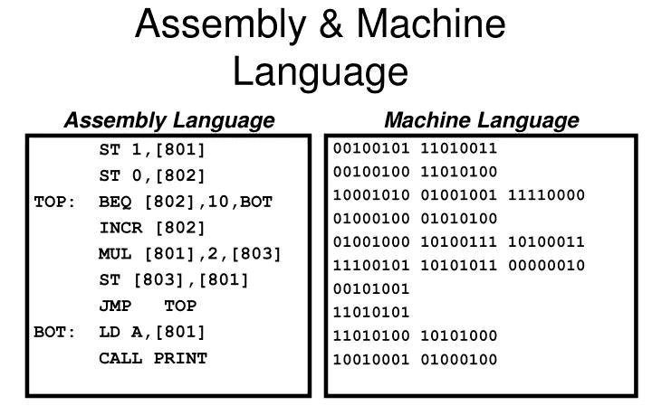
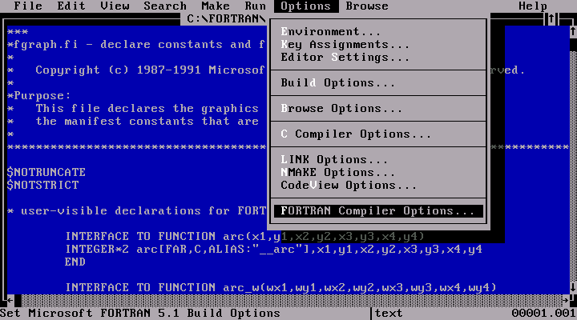
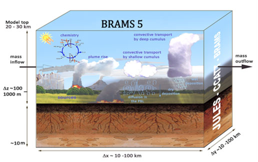

1957 — O FORTRAN torna a programação mais humana
A linguagem de programação FORTRAN foi a primeira linguagem de alto nível desenvolvida, sendo reconhecida por sua capacidade de simplificar a programação e torná-la mais acessível.
Embora a linguagem Assembly tenha sido a primeira a ser criada, a FORTRAN introduziu conceitos fundamentais que se tornaram padrões em linguagens de programação posteriores, como
a utilização de variáveis, loops e estruturas condicionais.


Mudanças com o surgimento do Fortran
Até os anos 1950, programar um computador significava escrever instruções muito próximas da linguagem da própria máquina — sequências de números e códigos binários específicos de cada
modelo de computador, trabalhoso, extremamente sujeito a erro e praticamente impossível de reaproveitar em outra máquina diferente. O engenheiro John Backus, trabalhando na IBM, liderou
uma equipe que passou anos desenvolvendo o FORTRAN (abreviação de Formula Translation), considerada uma das primeiras linguagens de programação de alto nível de sucesso comercial:
em vez de códigos numéricos crípticos, o programador podia escrever instruções parecidas com fórmulas matemáticas e expressões em inglês simplificado, e a própria linguagem, por meio
de um programa chamado compilador, também criado pela equipe de Backus — traduzia automaticamente isso para o código que a máquina realmente entendia.

A funcionalidade era clara e o impacto imediato: reduzir drasticamente o tempo e o esforço necessários para escrever um programa, permitindo que cientistas e engenheiros, e não só especialistas
em código de máquina, pudessem programar diretamente.
DESFECHO:
o FORTRAN abriu caminho conceitual para praticamente toda linguagem de programação que viria depois, provando que era possível programar em um nível mais próximo do pensamento humano
sem perder desempenho — e, surpreendentemente, ainda é usado até hoje em cálculos científicos pesados, como simulações climáticas e pesquisas em física.
